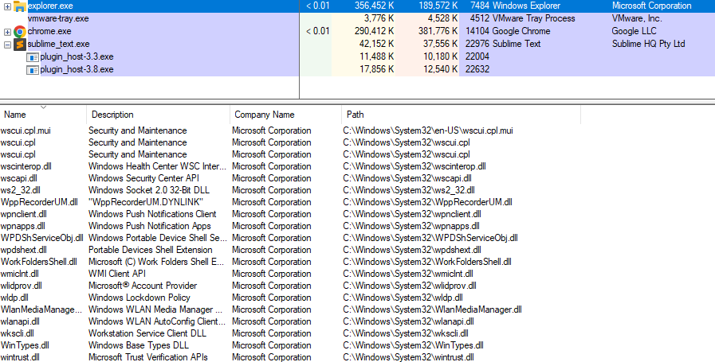
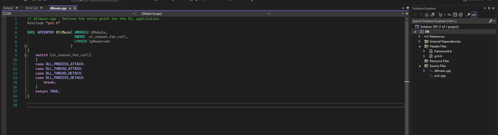

模块 09 - 动态链接库
模块 09 - 动态链接库
.exe 和 .dll 两种文件类型都属于便携式可执行格式，但两者之间存在差异。例如，一个可以通过立即注意到的主要区别是，.exe 文件可以通过双击执行，而 .dll 文件则不能。本模块将概述两种文件类型之间的其他差异。
什么是 DLL？
DLL 是可执行函数或数据的共享库，可被多个应用程序同时使用。它们用于导出供进程使用的函数。与 EXE 文件不同，DLL 文件不能单独执行代码。相反，DLL 库需要被其他程序调用才能执行代码。如前所述，CreateFileW 从 kernel32.dll 导出，因此如果进程想要调用该函数，它首先需要将 kernel32.dll 加载到其地址空间中。
默认情况下，某些 DLL 会自动加载到每个进程中，因为这些 DLL 导出了进程正确执行所需的函数。这些 DLL 的几个示例包括 ntdll.dll、kernel32.dll 和 kernelbase.dll。下图显示了当前由 explorer.exe 进程加载的几个 DLL。

系统范围 DLL 基地址
Windows 操作系统使用系统范围 DLL 基地址在给定计算机上的所有进程的虚拟地址空间中加载一些 DLL，目的是优化内存使用率并提升系统性能。下图显示了在多个正在运行的进程中，kernel32.dll 加载到同一地址 (0x7fff9fad0000) 的情况。

使用 DLL 的原因
在 Windows 中大量使用 DLL 有以下几个原因：
- 代码模块化 - 替代包含整个功能的巨型可执行文件，代码被划分为多个独立的库，每个库关注于特定的功能。模块化让开发者在开发和调试过程中更轻松。
- 代码重用 - DLL 由于能够被多个进程调用而促进了代码重用。
- 高效的内存使用 - 当多个进程需要相同的 DLL 时，它们可以通过共享该 DLL 而非将其加载到进程内存中来节省内存。
在 Visual Studio 中创建 DLL 文件
要创建一个 DLL 文件，请启动 Visual Studio 并新建一个项目。当显示项目模板时，选择“动态链接库 (DLL)”选项。

接下来，选择保存项目文件的位置。保存项目后，将显示带有默认 DLL 代码的 dllmain.cpp。

DLL 入口点
回想一下，DLL 是由应用程序（如 .exe 文件）加载的。因此，DLL 可以指定一个入口点函数，该函数将在发生特定操作时执行代码。入口点有可能在 4 个位置被调用：
DLL_PROCESS_ATTACH- 进程正在加载 DLL。DLL_THREAD_ATTACH- 进程正在创建一个新的线程。DLL_THREAD_DETACH- 线程正常退出。DLL_PROCESS_DETACH- 进程卸载 DLL。
导出函数
DLL 可以导出函数以供调用应用程序使用。要导出函数，需要使用关键词 extern 和 __declspec(dllexport) 进行定义。以下 sampleDLL.dll 文件中展示了一个示例导出的函数 HelloWorld。
////// sampleDLL.dll //////
#include <Windows.h>
// 导出的函数
extern __declspec(dllexport) void HelloWorld() {
MessageBoxA(NULL, "Hello, World!", "DLL 消息", MB_ICONINFORMATION);
}
// DLL 的入口点
BOOL APIENTRY DllMain(HMODULE hModule, DWORD ul_reason_for_call, LPVOID lpReserved) {
switch (ul_reason_for_call) {
case DLL_PROCESS_ATTACH:
case DLL_THREAD_ATTACH:
case DLL_THREAD_DETACH:
case DLL_PROCESS_DETACH:
break;
}
return TRUE;
}
在将 sampleDLL.dll 载入内存后，外部应用程序现在可以调用 HelloWorld。
动态链接
可以使用 LoadLibrary、GetModuleHandle 和 GetProcAddress WinAPI 从 DLL 导入函数。这称为 动态链接。这是一种在运行时加载并链接代码（DLL）的方法，而不是使用链接器和导入地址表在编译时对其进行链接。使用动态链接有几个优点；这些优点由 Microsoft 在此处 记录。
以下部分将逐步介绍加载 DLL、检索 DLL 的句柄、检索导出的函数地址，然后从外部二进制文件调用函数。
步骤 1 - 加载 DLL
从这一步开始，我们将切换到一个 EXE 文件。这是因为我们的 EXE 文件将加载 sampleDLL.dll，然后调用 HelloWorld 函数。因此，创建一个新的 Win32 控制台应用程序，然后按照说明调用 HelloWorld。
在应用程序中调用诸如 MessageBoxA 的函数时，操作系统会强制 Windows 将导出 MessageBoxA 函数的 DLL 加载到调用进程的内存地址空间，在本例中是 user32.dll。user32.dll 的加载是由操作系统在进程启动时自动完成，而不是由代码完成。
但是，对于我们的 sampleDLL.dll 等自定义 DLL，该 DLL 将不会被加载到内存中。由于应用程序没有将 sampleDLL.dll 加载到内存中，因此需要使用 LoadLibrary WinAPI，如下所示：
#include <windows.h>
int main() {
// 加载 DLL（Dynamic Link Library，动态链接库）
HMODULE hModule = LoadLibraryA("sampleDLL.dll"); // hModule 现在包含 sampleDLL.dll 的句柄
}
第 2 步 - 检索 DLL 的句柄
如果 sampleDLL.dll 已加载到应用程序的内存中，则可以通过 GetModuleHandle WinAPI 函数检索其句柄，而无需使用 LoadLibrary 函数。
#include <windows.h>
int main() {
// 尝试获取已在内存中的 DLL 的句柄
HMODULE hModule = GetModuleHandleA("sampleDLL.dll");
if (hModule == NULL) {
// 如果 DLL 未加载到内存中，使用 LoadLibrary 将其加载
hModule = LoadLibraryA("sampleDLL.dll");
}
}
步骤 3 - 获取函数地址
一旦 DLL 加载到内存中且已检索到句柄，下一步就是检索函数的地址。此操作通过以下方式完成：GetProcAddress WinAPI，它采用导出函数的 DLL 句柄和函数名称。
#include <windows.h>
int main() {
// 尝试获取 DLL 的句柄
HMODULE hModule = GetModuleHandleA("sampleDLL.dll"); // HMODULE：句柄类型
if (hModule == NULL) {
// 如果 DLL 未加载到内存中，则使用 LoadLibrary 加载它
hModule = LoadLibraryA("sampleDLL.dll");
}
PVOID pHelloWorld = GetProcAddress(hModule, "HelloWorld"); // PVOID：指针类型 // pHelloWorld 存储 HelloWorld 的函数地址
}
第4步 - 进行函数地址类型转换
一旦将HelloWorld的地址保存在pHelloWorld变量中，下一步就是针对此地址执行一次类型转换，转换为HelloWorld的函数指针。必须使用此函数指针才能调用函数。
#include <windows.h>
// 构造新数据类型，该类型表示HelloWorld的函数指针
typedef void (WINAPI* HelloWorldFunctionPointer)();
int main() {
// 尝试获取DLL的句柄
HMODULE hModule = GetModuleHandleA("sampleDLL.dll");
if (hModule == NULL) {
// 如果未在内存中加载DLL，则使用 LoadLibrary 进行加载
hModule = LoadLibraryA("sampleDLL.dll");
}
PVOID pHelloWorld = GetProcAddress(hModule, "HelloWorld"); /// pHelloWorld 存储 HelloWorld 的函数地址
HelloWorldFunctionPointer HelloWorld = (HelloWorldFunctionPointer)pHelloWorld;
return 0;
}
集成 - 调用 HelloWorld
本节将上述所有步骤集成到一个名为 call() 的函数中。该函数将主要执行以下步骤：
- 加载
sampleDLL.dll - 检索
HelloWorld函数的地址 - 将
HelloWorld类型转换为指针 - 调用
HelloWorld
同样，这个函数是从我们的 .exe 程序中调用的，因为它加载了 DLL 并调用了 HelloWorld 函数。
#include <windows.h>
// 构建新的数据类型以表示 HelloWorld 函数指针
typedef void (WINAPI* HelloWorldFunctionPointer)();
void call() {
// 尝试获取 DLL 句柄
HMODULE hModule = GetModuleHandleA("sampleDLL.dll");
if (hModule == NULL) {
// 如果未将 DLL 加载到内存中，则使用 LoadLibrary 加载它
hModule = LoadLibraryA("sampleDLL.dll");
}
// pHelloWorld 存储 HelloWorld 函数地址
PVOID pHelloWorld = GetProcAddress(hModule, "HelloWorld");
// 将 pHelloWorld 的类型转换为 HelloWorldFunctionPointer
HelloWorldFunctionPointer HelloWorld = (HelloWorldFunctionPointer)pHelloWorld;
// 调用 HelloWorld
HelloWorld();
}
动态链接示例 - MessageBoxA
以下代码演示了动态链接的另一个简单示例，其中调用了 MessageBoxA。此代码假设导出该函数的 DLL user32.dll 未加载到内存中。回想一下，如果 DLL 未加载到内存中，则需要使用 LoadLibrary 将该 DLL 加载到进程的地址空间中。
typedef int (WINAPI* MessageBoxAFunctionPointer)( // 创建一个新数据类型，表示 MessageBoxA 的函数指针
HWND hWnd,
LPCSTR lpText,
LPCSTR lpCaption,
UINT uType
);
void call(){
// 检索 MessageBox 的地址，并将其保存到 'pMessageBoxA'（MessageBoxA 的函数指针）
MessageBoxAFunctionPointer pMessageBoxA = (MessageBoxAFunctionPointer)GetProcAddress(LoadLibraryA("user32.dll"), "MessageBoxA");
if (pMessageBoxA != NULL){
// 如果不为空，则通过其函数指针调用 MessageBox
pMessageBoxA(NULL, "MessageBox's Text", "MessageBox's Caption", MB_OK);
}
}
函数指针
在该课程的后续部分，函数指针数据类型将采用一种命名约定，即在 WinAPI 名称前加上“fn”，代表“Function Pointer”。例如，上述 MessageBoxAFunctionPointer 数据类型将表示为 fnMessageBoxA。这可保持简洁并提高课程中的清晰性。
Rundll32.exe
除了使用编程方法，还有几种方式可以运行导出函数。一种常见的技术是使用二进制文件 rundll32.exe。Rundll32.exe 是一个内置的 Windows 二进制文件，用于运行 DLL 文件的导出函数。要运行导出函数，请使用以下命令：
例如，User32.dll 导出函数 LockWorkStation，该函数锁定计算机。要运行该函数，请使用以下命令：
删除预编译头文件
当使用 Visual Studio 模板创建 DLL 文件时，DLL 模板中包含 framework.h、pch.h 和 pch.cpp，这些文件称为 预编译头文件。这些文件用于加快大型项目的编译速度。在本文档所讨论的情况下，你不太可能需要这些文件，因此建议按照以下步骤删除这些文件。
首先，使用 Visual Studio 的 DLL 模板创建一个新的 DLL 文件，如前面所示。

接下来，打开项目，高亮显示 framework.h、pch.h 和 pch.cpp，然后按 Delete 键并选择“删除”选项。
你还需要从 dllmain.cpp 中删除 #include "pch.h"，并将其替换为 #include <Windows.h>。


删除预编译头文件后，必须更改编译器的默认设置，以确认项目中不应使用预编译头文件。

转到 C/C++ > 预编译头文件

将“预编译头文件”选项更改为“不使用预编译头文件”，然后按“应用”。
最后，将 dllmain.cpp 文件更改为 dllmain.c。这是必需的，因为 Maldev Academy 中提供的代码片段使用 C 而不是 C++。若要编译程序，请单击“生成”>“生成解决方案”，然后在 Release 或 Debug 文件夹下（具体取决于编译配置）创建一个 DLL。
目标
-
查看 DLL 的 4 个入口点
-
DLL_PROCESS_ATTACH- 进程正在加载 DLL。 DLL_THREAD_ATTACH- 进程正在创建一个新的线程。DLL_THREAD_DETACH- 线程正常退出。-
DLL_PROCESS_DETACH- 进程卸载 DLL。 -
阅读有关 LoadLibrary、GetModuleHandle 和 GetProcAddress 的文档
- 创建导出函数的 DLL
设置不使用预编译头
// dllmain.c
#include <windows.h>
// 导出的函数
extern __declspec(dllexport) void HelloWorld() {
MessageBoxA(NULL, "Hello, World!", "DLL 消息", MB_ICONINFORMATION);
}
// DLL 的入口点
BOOL APIENTRY DllMain(HMODULE hModule, DWORD ul_reason_for_call, LPVOID lpReserved) {
switch (ul_reason_for_call) {
case DLL_PROCESS_ATTACH:
case DLL_THREAD_ATTACH:
case DLL_THREAD_DETACH:
case DLL_PROCESS_DETACH:
break;
}
return TRUE;
}
- 使用 Rundll32.exe 调用该函数

- 创建一个加载 DLL 的 EXE 程序。使用 Process Hacker 验证 DLL 是否已加载
#include <windows.h>
// 构造新数据类型，该类型表示HelloWorld的函数指针
typedef void (WINAPI* HelloWorldFunctionPointer)();
int main() {
// 加载 DLL（Dynamic Link Library，动态链接库）
HMODULE hModule = GetModuleHandleA("SimpleDll.dll");
if (hModule == NULL) {
hModule = LoadLibraryA("SimpleDll.dll");
}
PVOID pHelloWorld = GetProcAddress(hModule, "HelloWorld");
HelloWorldFunctionPointer HelloWorld = (HelloWorldFunctionPointer)pHelloWorld;
HelloWorld();
return 0;
}
注意编译的版本架构要和 DLL 一致，比如两者都是 x64 版本。